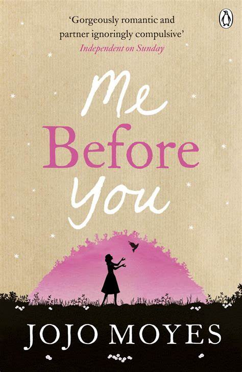

Me Before You
Író: Jojo Moyes Kiadás: 2012
Jojo Moyes "Me Before You" egy érzelmes történet egy fiatal nőről, Lou-ról, aki váratlanul kap munkát egy baleset következtében mozgássérült férfi, Will gondozójaként. A történet során Lou és Will között kialakuló kapcsolat mély érzelmekre és életfilozófiára reflektál.
Jojo Moyes

Foglalkozása: Író Született: 1969
Jojo Moyes egy brit író, aki különböző műfajokban alkot, beleértve a romantikus regényeket és a drámákat is. Az egyik legsikeresebb műve a „Me Before You” című regény, ami később filmet is kapott.